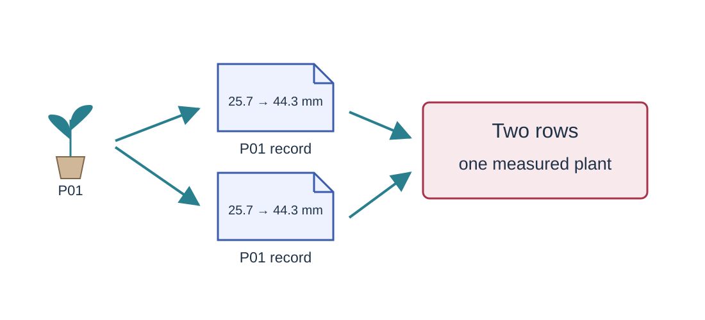
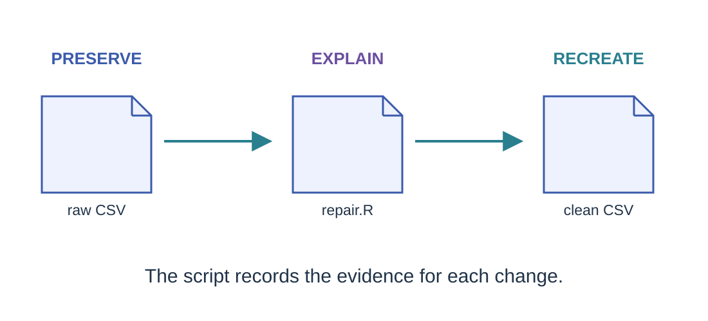
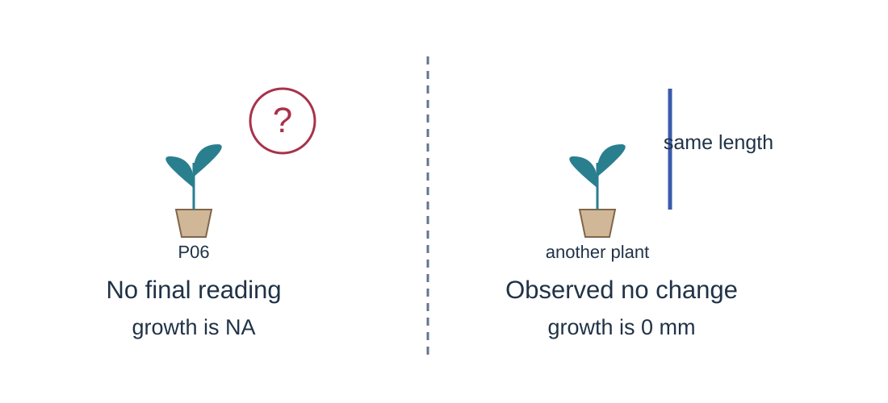
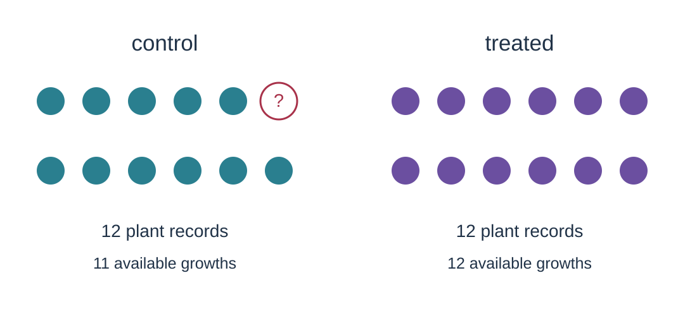
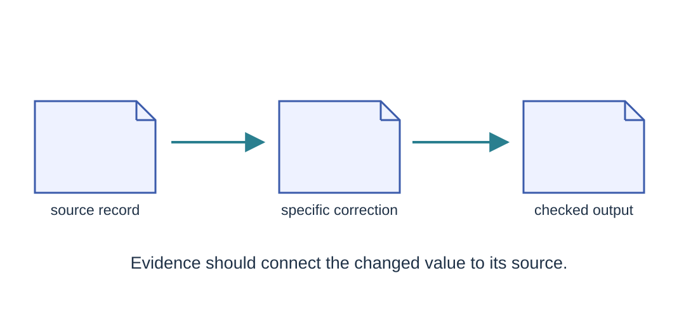
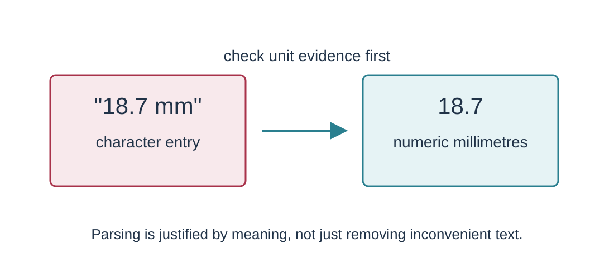
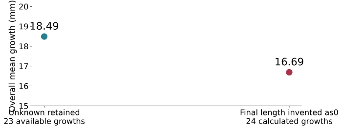
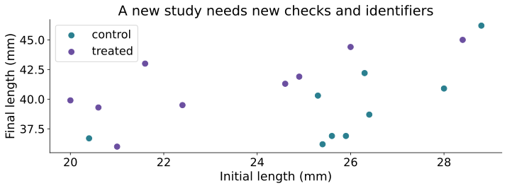

Check the measurement, then calculate
Day 11 — Data quality and evidence
Did we measure 25 plants?

The study has 24 plants. The export has 25 rows.
Keep the original and explain every repair

A script makes the changes inspectable and repeatable.
Inspect the original entries as text
library(readr)
library(dplyr)
raw <- read_csv("data/seedlings-messy.csv",
col_types = cols(.default = col_character()),
trim_ws = FALSE, show_col_types = FALSE)
unique(raw$treatment)Control, control, and treated are different stored strings.
A suspicious number is a question, not a verdict

The source notebook confirms P21: 43.8 mm.
Unknown is different from zero

Keep P06’s final length as NA.
Repair only what the evidence supports
cleaned <- raw |>
mutate(treatment = tolower(trimws(treatment)),
initial_mm = if_else(plant_id == "P18", "18.7", initial_mm),
final_mm = if_else(plant_id == "P21", "43.8", final_mm)) |>
distinct() |>
mutate(initial_mm = parse_double(initial_mm),
final_mm = parse_double(final_mm),
growth_mm = final_mm - initial_mm)The original file stays unchanged; missing measurements remain missing.
Count records and available measurements separately

24 unique plants; 23 available growth measurements.
Prediction: what should these two means return?
Explain the missing observation before choosing the second calculation.
A repair needs an audit trail

For every changed value: observation → evidence → action → check.
Two matching IDs do not automatically mean a duplicate
Compare all fields, then consult the design and source note.
- One row per plant: a repeated identifier prompts investigation.
- One row per time point: repeated identifiers may be expected.
- Disagreeing records need investigation, not arbitrary deletion.
Number text and a measurement are different objects

Correct representation after checking meaning; do not just strip inconvenient characters.
What an invented zero would claim

P06 initial length is 24.7 mm: a final zero invents −24.7 mm growth.
Check the saved output, not only the Environment pane
write_csv(cleaned, 'output/seedlings-cleaned.csv')
check_copy <- read_csv('output/seedlings-cleaned.csv',
show_col_types = FALSE)
nrow(check_copy)
anyDuplicated(check_copy$plant_id)
sum(is.na(check_copy$growth_mm))Expect 24 unique plants and one unavailable growth value.
A new class is a new source

The column pattern is familiar; the values, identifiers, and checks are new.
A schema is an expectation you can check
Before importing, state:
- What one row represents and which ID should be unique.
- Column names, types, labels, and units.
- What missingness and derived growth would mean.
Then record what you actually observed.
Decide whether a change is justified
An unfamiliar value appears in the transfer file.
What can you do immediately, and what requires more evidence?
Inspect the record and unit; preserve the input; ask the recorder. Do not change it merely because it is far from the others.
Exercises: leave a repair trail
Save day11-cleaning.R, a derived CSV, and short cleaning notes.
- Which source fact justified each change?
- Which measurement stayed unknown?
- Can the script recreate the corrected file after restarting R?